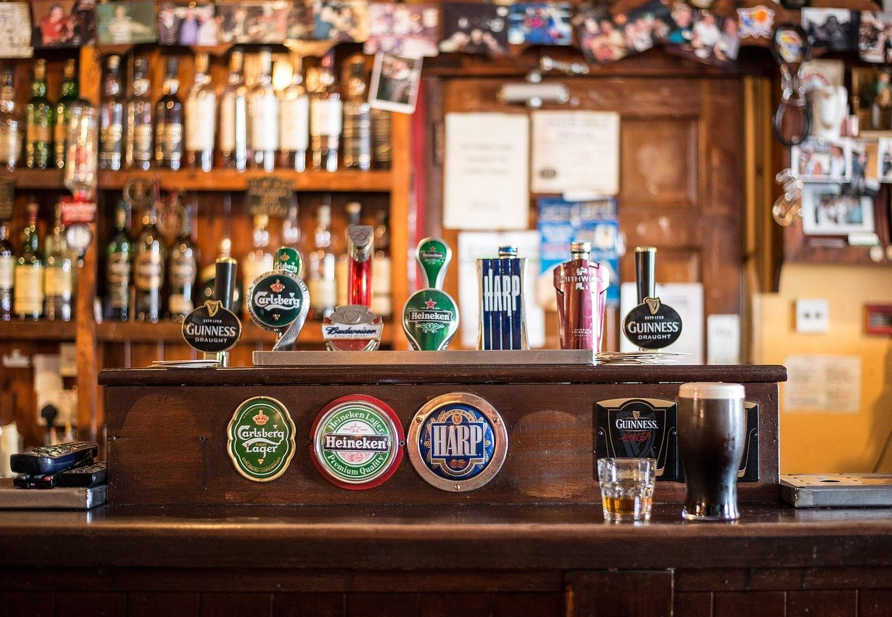
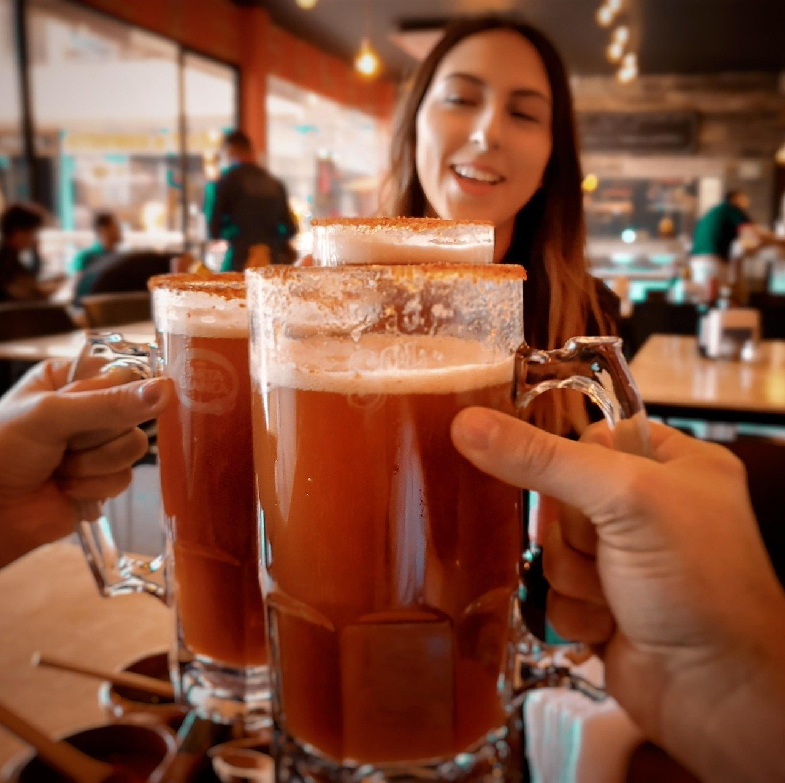
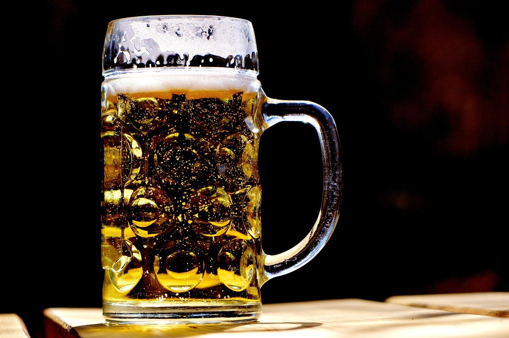
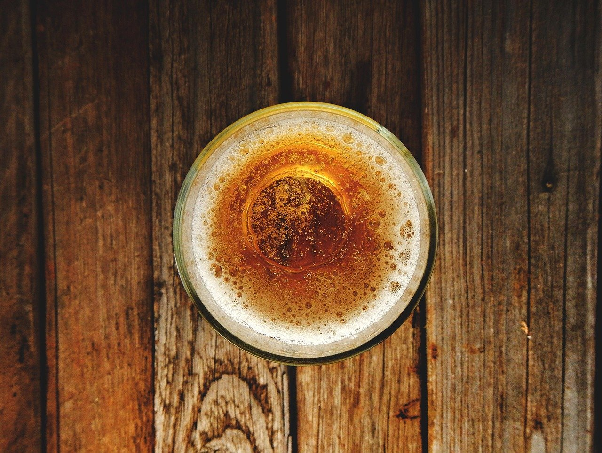

Bere irlandeză
Bere irlandeză, de băut la o masă cu prietenii, după cursuri sau după serviciu.
Pagină de probă făcută de MK Studio pentru Arthur Pub · 600 lei + 100 lei/lună · gata în 5 zile
Scrie-ne pe WhatsAppBere irlandeză și fish and chips
Pe Bulevardul Mamaia, vizavi de Universitatea Ovidius, în Constanța.

Arthur Pub este pe Bulevardul Mamaia, în Constanța, chiar vizavi de Universitatea Ovidius.
La noi bei bere irlandeză și mănânci fish and chips. Dacă vii cu un grup de prieteni, rezervă o masă la telefon sau pe e-mail.
La Arthur Pub găsești bere irlandeză și fish and chips.
Bere irlandeză, de băut la o masă cu prietenii, după cursuri sau după serviciu.
Pește prăjit în aluat și cartofi prăjiți, mâncarea clasică de pub, care se comandă lângă o bere.
Rezervările se fac la telefon sau pe e-mail. Cel mai repede rezervi sunând la 0733 449 583.
Rezervă la telefonFotografii ilustrative. Apasă pe o poză ca s-o vezi mare.



Sună la 0733 449 583 și spune-ne câți veniți și la ce oră. Rezervările se fac și pe e-mail.
2moduri de a rezerva: telefon și e-mail